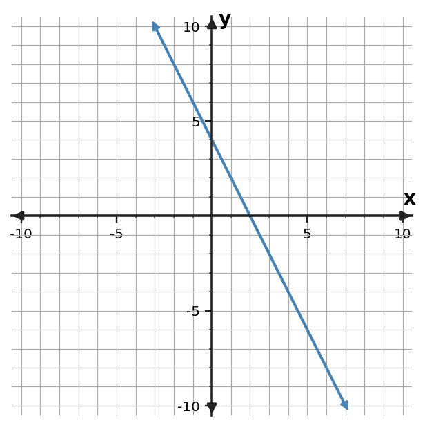

Algebra 1 • Unit 2
Section 2.2 — Ticket A
1Graph $y=-x+4$. Mark the $y$-intercept and at least one additional point that shows the slope. | 2Use the graph to identify the $y$-intercept and describe whether the function is increasing or decreasing.  |
3Read the trip graph to estimate the distance at 4 hours. The requested time is inside the displayed 0-to-8-hour window.  | 4The equation is $y=-2x+3$. A student plots $(0,-2)$ as the intercept. Identify the error and correct it. |